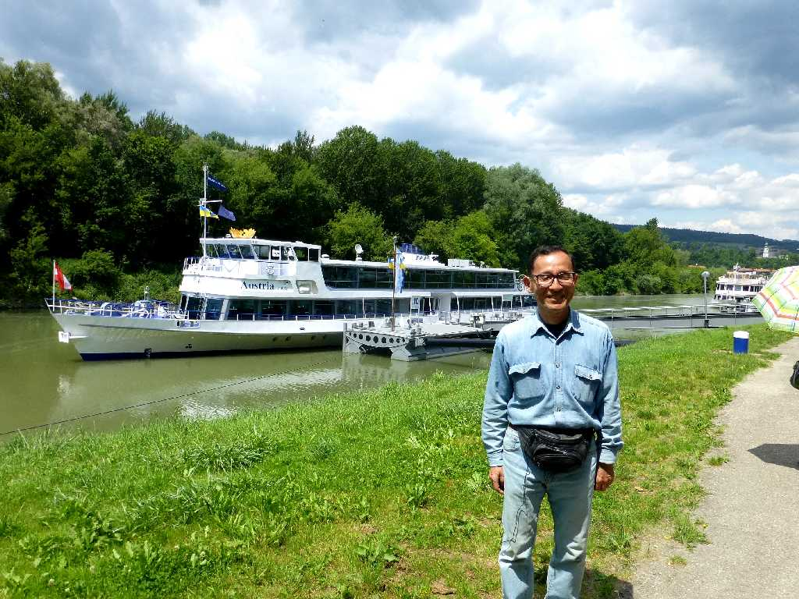
June 26 2015 Melk Wachau
メルクからクレムスまでドナウ河のヴァッハウ渓谷を河沿いの美しい城や街並みを眺めながら下る
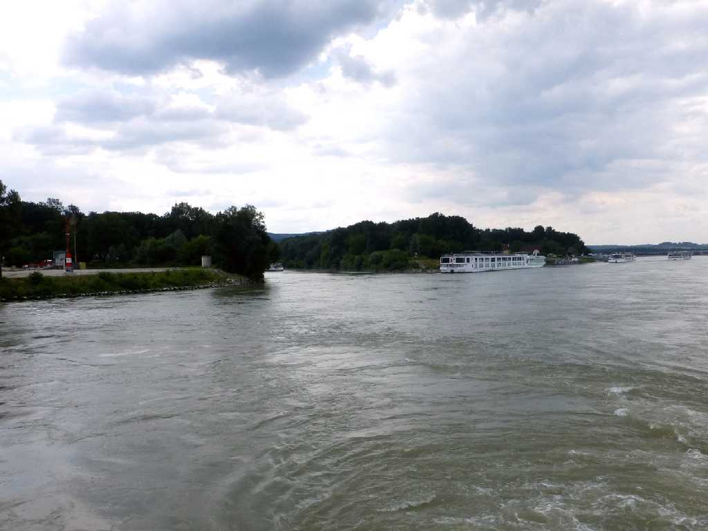
Donau Melk Wachau
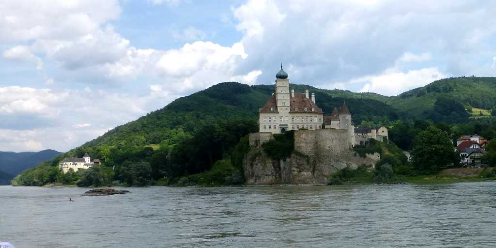
Schloß Schönbühl Wachau Donau
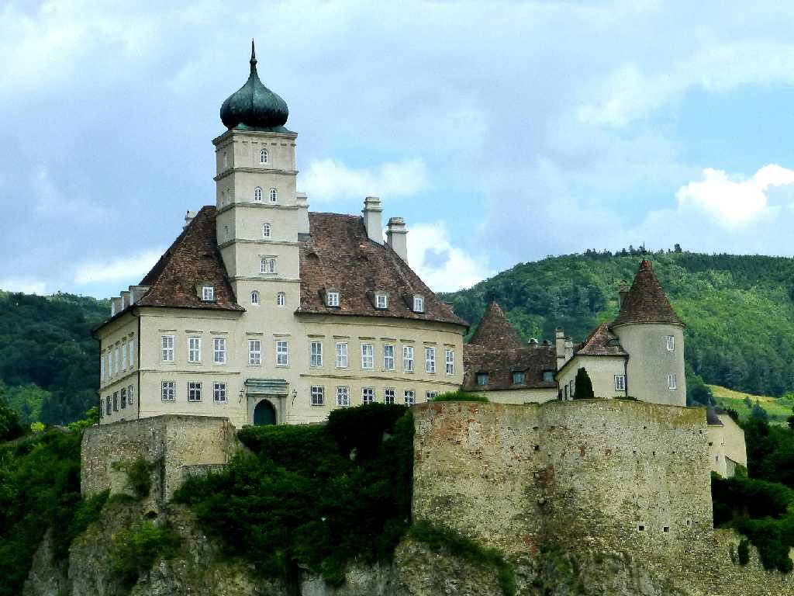
Schloß Schönbühl Wachau
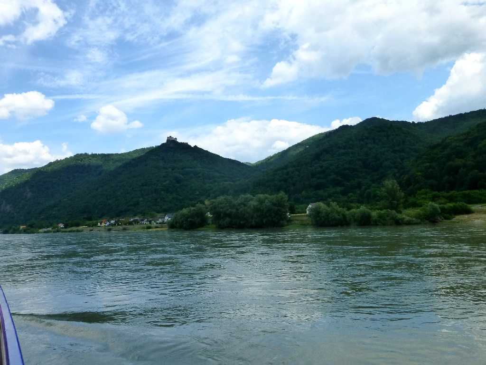
Burgruine Aggstein Wachau Donau
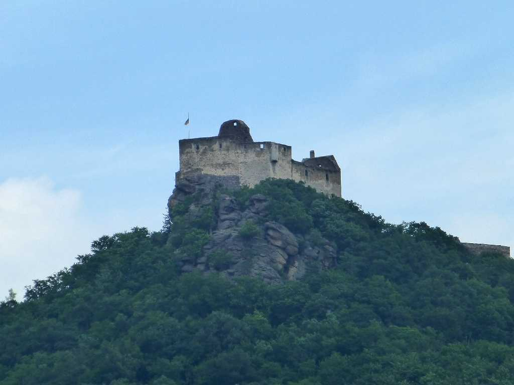
Burgruine Aggstein Wachau
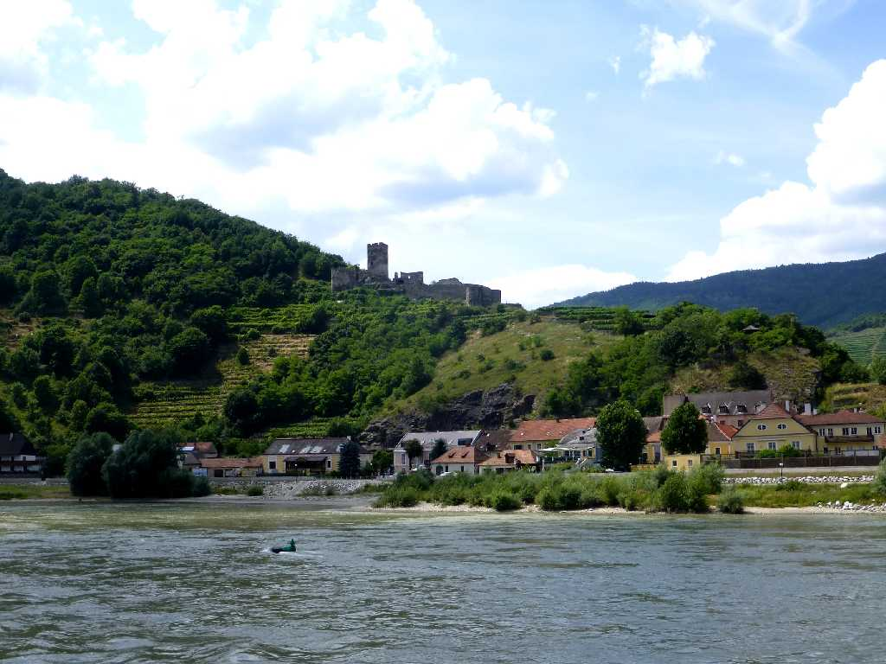
Burgruine Hinterhaus Wachau Donau
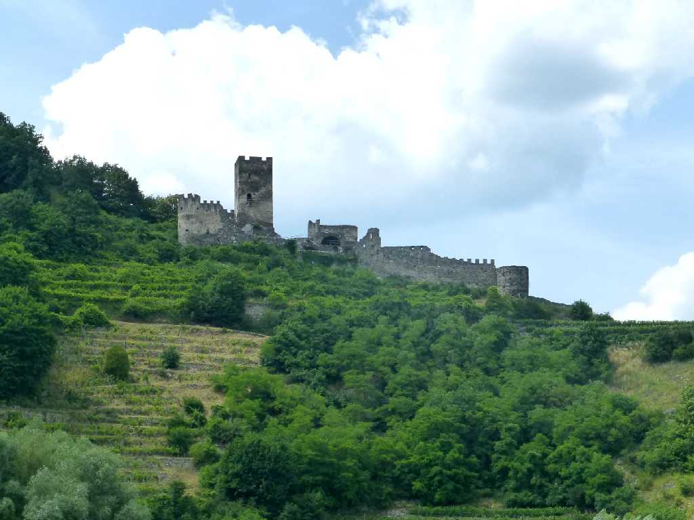
Burgruine Hinterhaus Wachau
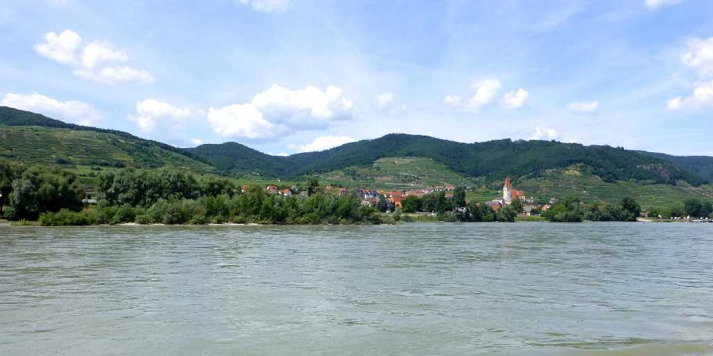
Weißenkirchen Wachau Donau
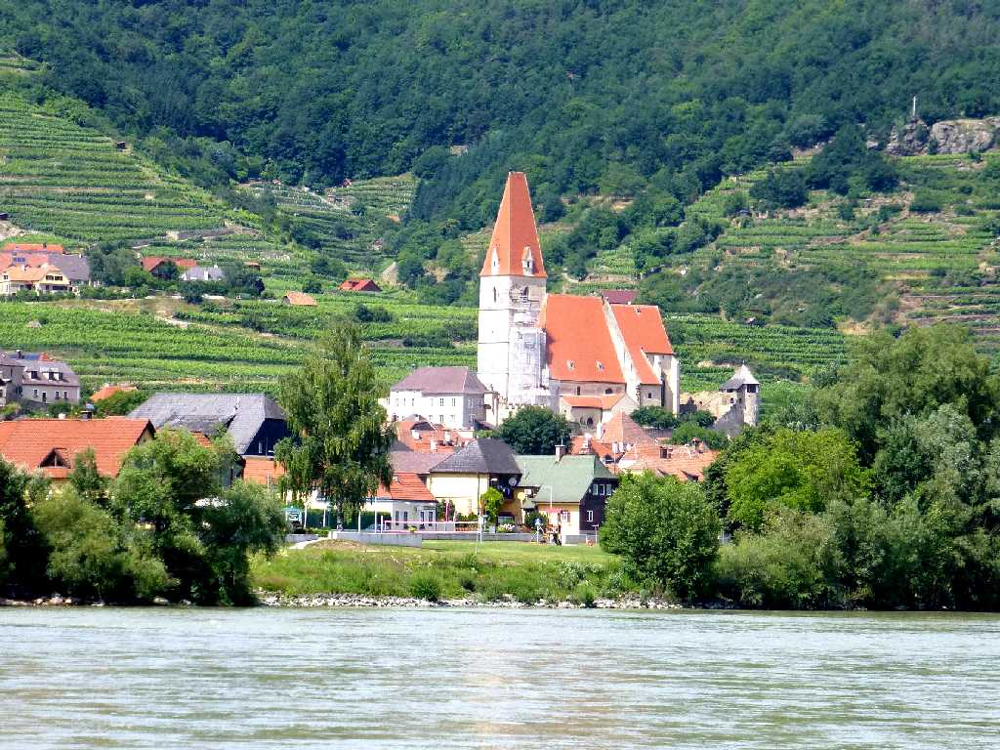
Sankt Michael Weißenkirchen Wachau
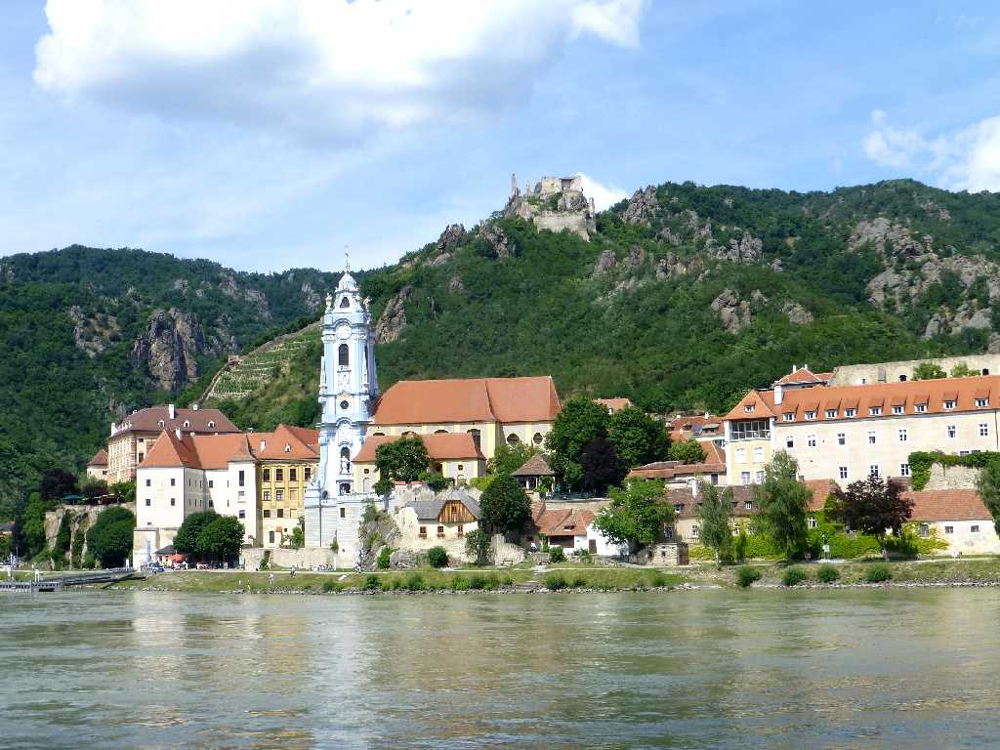
Stift Dürnstein Burgruine Dürnstein Wachau Donau
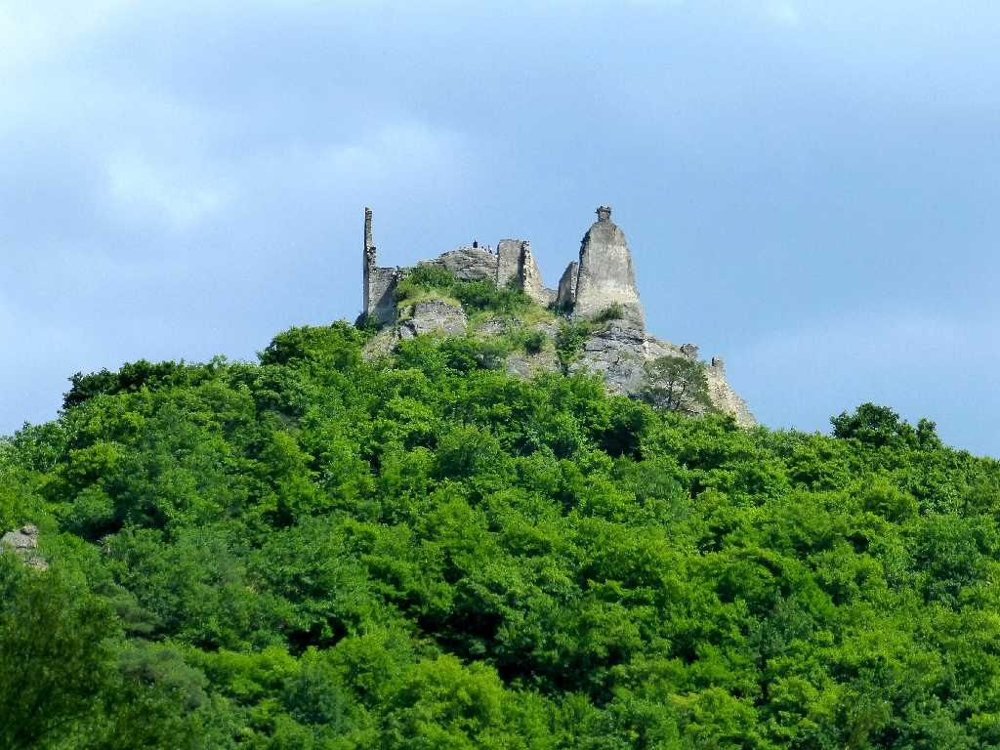
Burgruine Dürnstein Wachau
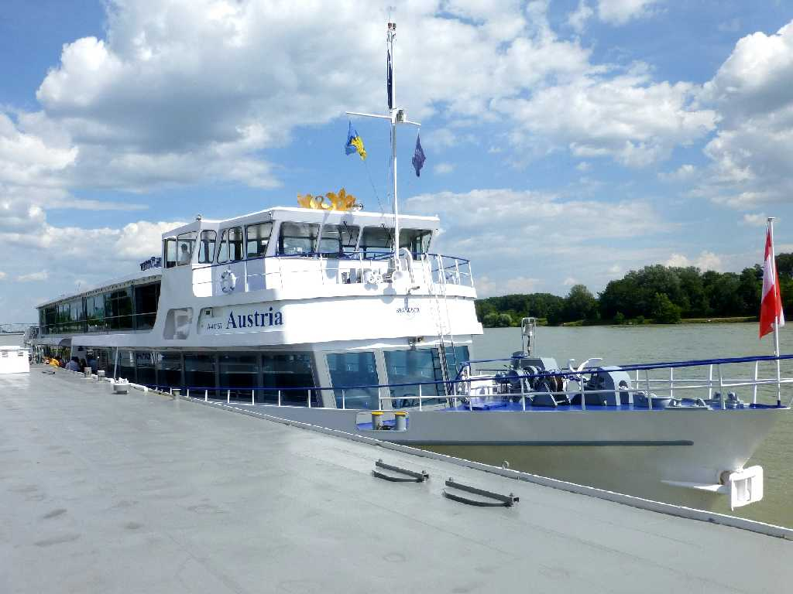
Krems Wachau